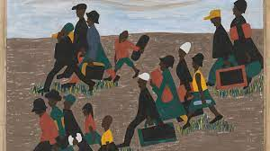

Jacob Armstead Lawrence was born in Atlantic City, New Jersey, in 1917. The son of Southern migrants, he moved with his mother and sister to Harlem in 1930 at age 13. There, during his participation in community art workshops, Lawrence quickly discovered his love of art through the encouragement of teachers such as painter Charles Alston. Throughout the 1930s, Lawrence’s art was inspired by the cultural visionaries of the Harlem Renaissance.
In 1938, Lawrence had his first solo exhibition at the Harlem YMCA and started working for the WPA Federal Art Project. In 1940, he received a grant to create a 60-panel epic, The Migration of the Negro (now known as The Migration Series). When the series was exhibited at Edith Halpert’s Downtown Gallery the following year, the then 23-year-old artist catapulted to national acclaim.
His art is drawn from the African American experience as well as historical and contemporary themes, such as war, religion, and civil rights. https://lawrencemigration.phillipscollection.org/artist/about-jacob-lawrenceLawrence maintained that he was “a child of the Great Migration,” which shaped the course of his own and his fellow African Americans’ lives.
If the Great Migration provided him with geographical advantages, it was Harlem, then in the midst of the cultural and intellectual outpouring known as the Harlem Renaissance (1920s–1930s), that inspired him to make art. As he once described his beloved neighborhood: “All these people on the street, various colors, so much pattern, so much movement, so much color, so much vitality, so much energy.”
“I do not look upon the story of the Blacks in America as a separate experience to the American culture but as a part of the American heritage and experience as a whole,”he said in 1943.
Jacob Lawrence witnessed the innovative and improvised lifestyles created by the convergence of the Great Migration, the Depression, the Jazz Age, and the Harlem Renaissance. Inspired by the Harlem community's interest in the stories of its heritage, Lawrence became the storyteller or visual griot of the neighborhood. 